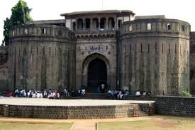
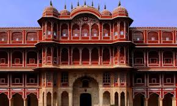

Historical Places in Pune
-
Shaniwar Wada: A historical fortification in the city center built in 1732.
-
Aga Khan Palace: Known for its architectural excellence and historical significance related to the Indian independence movement.
-
 Sinhagad Fort: A hill fortress located around 35 km southwest of Pune, known for its historical battles and strategic importance.
Sinhagad Fort: A hill fortress located around 35 km southwest of Pune, known for its historical battles and strategic importance. -
Raja Dinkar Kelkar Museum: Houses a collection of Indian artifacts, showcasing the culture and history of Pune.
-
Lal Mahal: Reconstructed palace, originally built in 1630, associated with the great Maratha ruler Shivaji Maharaj.
Pune, with its rich history, offers a glimpse into the past with these and many other historical sites. Each site has its own unique story and significance, making Pune a must-visit for history enthusiasts.